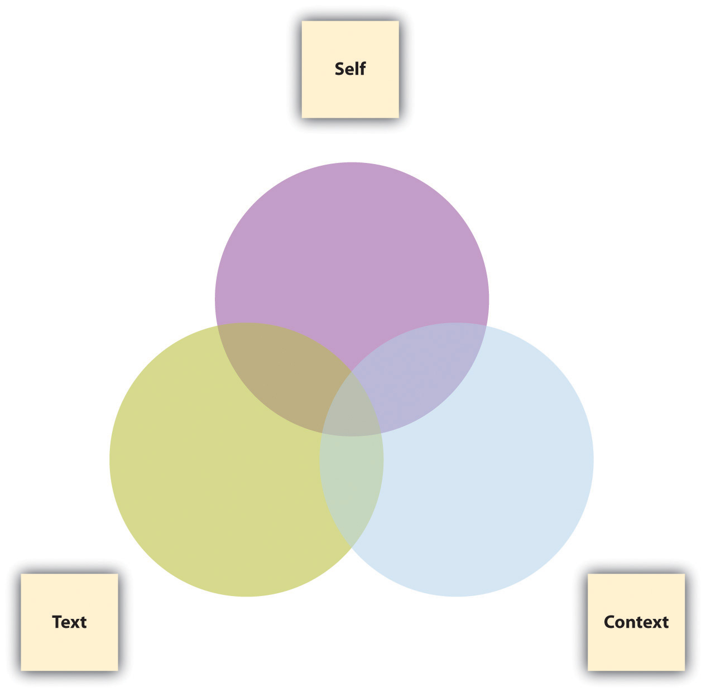

1.2 Posing Productive Questions
Learning Objectives
- Broaden your understanding of what constitutes a “text” worthy of analysis or interpretation.
- Learn how self, text, and context interact in the process of critical inquiry.
- Explore whether and when seemingly unproductive questions can still produce meaning or significance.
In Section 1.1 "Examining the Status Quo", we examined the status quo by asking a set of mindfulness questions about a variety of topics. In this section, we’ll explore other ways to open up thinking and writing through the systematic process of critical inquiryA systematic way of asking probing questions about texts.. Essentially three elements are involved in any act of questioning:
- The selfThe person doing the questioning. doing the questioning
- The textThe object of examination and analysis (defined very broadly to include nonverbal, nonwritten artifacts). about which the questions are being asked
- The contextThe surroundings that produce both the text and the self that is examining and analyzing it. of the text being questioned
For our purposes, text should be defined here very broadly as anything that can be subjected to analysis or interpretation, including but certainly not limited to written texts. Texts can be found everywhere, including but not limited to these areas:
- Music
- Film
- Television
- Video games
- Art and sculpture
- The Internet
- Modern technology
- Advertisement
- Public spaces and architecture
- Politics and government
The following Venn diagram is meant to suggest that relatively simple questions arise when any two out of three of these elements are implicated with each other, while the most complicated, productive questions arise when all three elements are taken into consideration.

Asking the following questions about practically any kind of text will lead to a wealth of ideas, insights, and possible essay topics. As a short assignment in a journal or blog, or perhaps as a group or whole-class exercise, try out these questions by filling in the blanks with a specific text under your examination, perhaps something as common and widely known as “Wikipedia” or “Facebook” or “Google” (for ideas about where to find other texts, see the first exercise at the end of this section).
Twenty Questions about Self, Text, and Context
Self-Text Questions
- What do I think about ____________?
- What do I feel about ___________?
- What do I understand or what puzzles me in or about ____________?
- What turns me off or amuses me in or about ____________?
- What is predictable or surprises me in or about ____________?
Text-Context Questions
- How is ___________ a product of its culture and historical moment?
- What might be important to know about the creator of ___________?
- How is ___________ affected by the genre and medium to which it belongs?
- What other texts in its genre and medium does ___________ resemble?
- How does ___________ distinguish itself from other texts in its genre and medium?
Self-Context Questions
- How have I developed my aesthetic sensibility (my tastes, my likes, and my dislikes)?
- How do I typically respond to absolutes or ambiguities in life or in art? Do I respond favorably to gray areas or do I like things more clear-cut?
- With what groups (ethnic, racial, religious, social, gendered, economic, nationalist, regional, etc.) do I identify?
- How have my social, political, and ethical opinions been formed?
- How do my attitudes toward the “great questions” (choice vs. necessity, nature vs. nurture, tradition vs. change, etc.) affect the way I look at the world?
Self-Text-Context Questions
- How does my personal, cultural, and social background affect my understanding of ________?
- What else might I need to learn about the culture, the historical moment, or the creator that produced ___________ in order to more fully understand it?
- What else about the genre or medium of ___________ might I need to learn in order to understand it better?
- How might ___________ look or sound different if it were produced in a different time or place?
- How might ___________ look or sound different if I were viewing it from a different perspective or identification?
We’ve been told there’s no such thing as a stupid question, but to call certain questions “productive” is to suggest that there’s such a thing as an unproductive question. When you ask rhetorical questionsA kind of persuasive strategy in which the poser of the question already knows the answer or expects a listener or reader to answer in a certain way. to which you already know the answer or that you expect your audience to answer in a certain way, are you questioning productively? Perhaps not, in the sense of knowledge creation, but you may still be accomplishing a rhetorical purpose. And sometimes even rhetorical questions can produce knowledge. Let’s say you ask your sister, “How can someone as intelligent as you are do such self-destructive things?” Maybe you’re merely trying to direct your sister’s attention to her self-destructive behavior, but upon reflection, the question could actually trigger some productive self-examination on her part.
Hypothetical questionsA kind of inquiry about something that hasn’t yet happened or may never happen; it is meant either to establish a hypothesis or to bait a rhetorical opponent., at first glance, might also seem unproductive since they are usually founded on something that hasn’t happened yet and may never happen. Politicians and debaters try to steer clear of answering them but often ask them of their opponents for rhetorical effect. If we think of hypothetical questions merely as speculative ploys, we may discount their productive possibilities. But hypothetical questions asked in good faith are crucial building blocks of knowledge creation. Asking “What if we tried something else?” leads to the formation of a hypothesisA theory of a case or situation that lends itself to experimental testing., which is a theory or proposition that can be subjected to testing and experimentation.
This section has focused more on the types of genuinely interrogative questions that can lead to productive ideas for further exploration, research, and knowledge creation once you decide how you want to go public with your thinking. For more on using rhetorical and hypothetical questions as devices in your public writing, see Chapter 4 "Joining the Conversation".
Key Takeaways
- At least two out of the following three elements are involved in critical inquiry: self, text, and context. When all three are involved, the richest questions arise.
- Expanding your notion of what constitutes a “text” will greatly enrich your possibilities for analysis and interpretation.
- Rhetorical or hypothetical questions, while often used in the public realm, can also perform a useful function in private, low-stakes writing, especially when they are genuinely interrogative and lead to further productive thinking.
Exercises
-
Use the Twenty Questions about Self, Text, and Context to develop a researched essay topic on one of the following types of texts. Note that you are developing a topic at this point. Sketch out a plan for how you would go about finding answers to some of the questions requiring research.
- An editorial in the newspaper
- A website
- A blog
- A television show
- A music CD or video
- A film
- A video game
- A political candidate
- A building
- A painting or sculpture
- A feature of your college campus
- A short story or poem
- Perform a scavenger hunt in the world of advertising, politics, and/or education for the next week or so to compile a list of questions. (You could draw from the Note 2.5 "Gallery of Web-Based Texts" in Chapter 2 "Becoming a Critical Reader" to find examples.) Label each question you find as rhetorical, hypothetical, or interrogative. If the questions are rhetorical or hypothetical, indicate whether they are still being asked in a genuinely interrogative way. Bring your examples to class for discussion or post them to your group’s or class’s discussion board.
- Apply the Twenty Questions about Self, Text, and Context to a key concept in an introductory course in which you are currently enrolled.